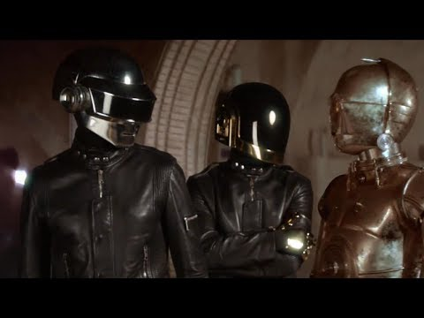
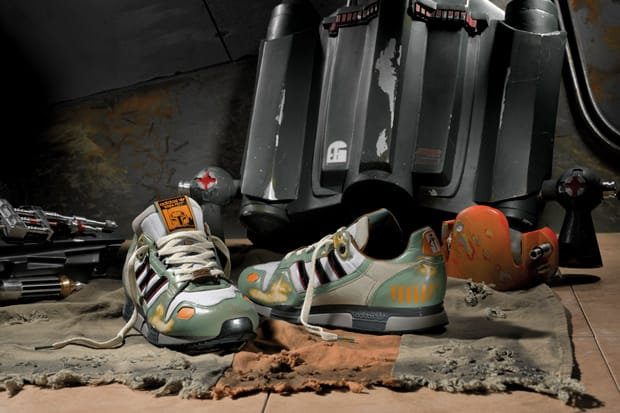

案例发生了什么


在《星球大战》酒吧原始镜头中加入贝克汉姆、贝肯鲍尔、Snoop Dogg、Daft Punk 等人物，让不同宇宙的明星挤在一起看世界杯。
重构经典电影场景；名人客串形成逐帧发现；世界杯观赛提供共同事件；同步发布 Star Wars 联名鞋服，把传播注意力导向商品。
MARKETING KNOWLEDGE ROUTER · 营销知识路由器
营销启发卡
把历届经典的记忆点、商业结构和迁移方法放在同一层阅读。 卡片底部按主题连接全站相关案例、经典方法与深度文章。
核心动作
认梗、跨圈同框、怀旧与“如果他们也看球”的荒诞乐趣；贝克汉姆、Daft Punk 和《星球大战》角色在 Mos Eisley 酒吧一起看球。
传播与商业机制
adidas Originals 同时拥有足球、音乐和街头文化身份；Star Wars 联名商品让影片里的文化混搭可以进入真实穿着与零售；重构经典电影场景；名人客串形成逐帧发现；世界杯观赛提供共同事件；同步发布 Star Wars 联名鞋服，把传播注意力导向商品。
可复用的方法
跨 IP 联名不能只换 Logo；让两个世界遵守同一个场景规则、共享一个行为，才能产生真正的新故事。
适用条件、风险与证据
- IP、音乐、演员和体育权益叠加，权利链极复杂；如果商品与内容脱节，会只留下明星彩蛋。
- IP、音乐、演员和体育权益叠加，权利链极复杂；如果商品与内容脱节，会只留下明星彩蛋。 后续复盘还应补齐发布主体、时间线、真实执行图、媒介范围和结果口径；没有这些证据时，不把行业评价或赛事总热度写成品牌增量。
资料与来源
官方资料与原始来源
市场 / 权益
全球
FIFA 官方赞助体系 / Star Wars 联名授权
创意打法
文化 IP 混搭型；经典场景重拍型；商品联名型
- adidas Originals / PR Newswire · 2010-06-07Star Wars Cantina 2010: The Most Original Place to Watch the World Cup
- 视频留存 · 2010adidas Originals Star Wars Cantina
- Hypebeast · 2010-08本页真实案例图片主源
来源按品牌/官方发布、官方账号留存、权威媒体、获奖案例库分层记录；品牌与奖项自报结果不视作独立审计。